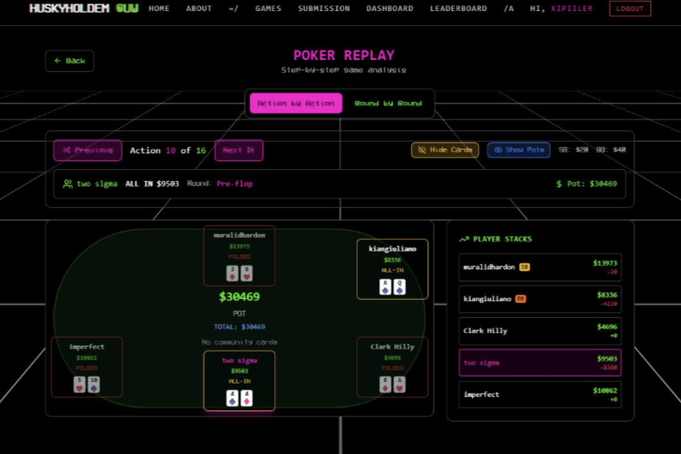
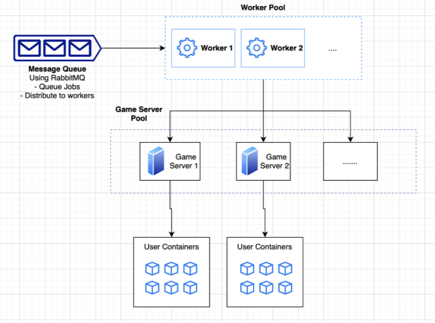
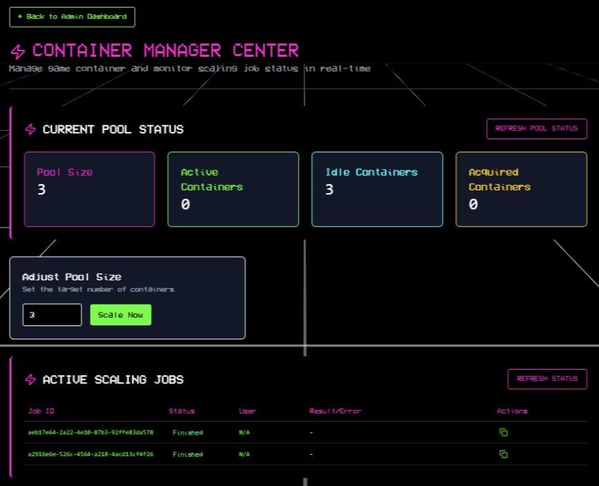

Running a Scalable Poker Bot Competition Platform
Behind the scenes of building and scaling infrastructure for a live multiplayer poker bot competition.
Project Links
Website: Husky Hold’em
GitHub: The Betting Edge and Husky Hold’em Client
More Details: LinkedIn Post

Overview of Husky Hold’em
Husky Hold’em is a poker bot competition hosting almost 100 users, where each user submitted their Python file using the poker client template. Each play consists of 6 users competing against each other through automated poker simulations.
In this project, I was one of the software developers responsible for hosting the poker bot competition. I was responsible for ensuring the competition platform could reliably support multiple users running poker bot simulations simultaneously by developing backend APIs to coordinate multiplayer simulations and implementing Docker container scaling based on active user demand.
This type of skill is especially valuable for systems where many users are interacting with shared infrastructure at the same time. In a business setting, this could apply to platforms that run automated tests, process background jobs, execute customer workflows, or handle multiple internal services at once. The system still needs to coordinate workloads, isolate execution safely, and scale resources based on demand so one user’s process does not affect the experience of others.
Since our users were constantly submitting and testing new poker bots throughout the competition, handling concurrent execution and infrastructure scaling became an important part of maintaining a stable platform. In this blog, I want to explain how I designed the backend workflow and scaling system behind the platform.
Basic Architecture

When we want to run one of the plays between the 6 users, we call the API route to that endpoint. However, the game is not executed directly because each simulation takes time to run. Instead, the game is processed asynchronously through a queue system. This is important because multiple users may submit and test their poker bots at the same time, and directly running every simulation immediately could overload the system or cause conflicts between concurrent plays.
To handle this, each simulation request is placed into a message queue. When it is the game’s turn to be processed from the queue, a worker takes the job and starts preparing the simulation environment. The worker first sets up the game server, then creates separate containers for each of the 6 users participating in the match.
We could not simply run the user-submitted Python files directly on the host machine because it would create major security and stability risks. Instead, each poker bot runs inside its own isolated Docker container. This isolation helps prevent users from accessing other users’ files, interfering with other running bots, or affecting the overall system environment. After the simulation is completed, the results are collected, returned to the system, and the containers are cleaned up to free resources for future matches.
API of Running 6 Python Pokerbots
Running a 6-player pokerbot match was not just a simple API call that executed one Python script. Each simulation required the backend to prepare a temporary runtime environment, load 6 different user-submitted programs, connect them to the same game server, run them concurrently, collect the results, and then clean everything up afterward.
The main challenge was that each user submitted their own Python file, which meant the system could not safely run the files directly on the host machine. To handle this, each pokerbot was placed into its own Docker container. This gave every player an isolated environment, so one user’s code could not access another user’s files, interfere with the game server, or affect the stability of the platform.
Before the match started, the worker downloaded each user’s submitted file from Supabase and packaged
the required files into a tar stream. This allowed the backend to inject player.py and
requirements.txt directly into the correct container without manually copying files through
the local filesystem.
with open("player.py", "rb") as player_file, open("requirements.txt", "rb") as packages_file:
tarstream = create_tar_from_files({
"player.py": SimpleNamespace(file=player_file),
"requirements.txt": SimpleNamespace(file=packages_file)
})After the user files were prepared, the worker acquired a game server container from the container pool and started the PokerDen engine. Instead of creating everything from scratch every time, the system reused available game server containers from the pool, which helped reduce startup overhead and made simulations faster to launch.
exec_command = f"python main.py --port={port} --sim --players={len(users_list)} --sim-rounds={num_rounds}"
container = self.docker_pool_manager.docker_service._get_container(game_server_name)
if container:
container.exec_run(exec_command, detach=True)
logger.info(f"Game started on container {game_server_name} for {num_rounds} rounds.")Each pokerbot container was then connected to the same internal Docker network as the game server. This part is important because the containers needed to communicate with each other during the match, but the simulation did not need to be publicly exposed. The network acted as a private environment where only the game server and the 6 player containers could interact.
def connect_container_to_network(self, network_name: str, container_name: str) -> bool:
try:
network = self.client.networks.get(network_name)
container = self.client.containers.get(container_name)
network.connect(container)
logger.info(f"Container '{container.name}' connected to network '{network_name}'.")
return True
except NotFound:
logger.error(f"Network '{network_name}' or container not found.")
return False
except Exception as e:
logger.error(f"Failed to connect container to network '{network_name}': {str(e)}")
return FalseOnce the containers were connected, the worker installed each bot’s dependencies and started the player process. Since dependency installation and bot execution can fail, the worker had to check for package installation errors and use timeout protection during execution. This prevents one broken or slow pokerbot from blocking the entire simulation forever.
# Get users file
tarstream_clone = clone_bytes(users_file[username])
user_container.put_archive("/app", tarstream_clone)
self.docker_pool_manager.docker_service.connect_container_to_network(
settings.GAME_NETWORK_NAME,
user_bot_container_name
)
logger.info("Installing Python packages...")
out = self.docker_pool_manager.docker_service.install_python_package(user_bot_container_name)
if "error" in out.lower():
raise Exception(f"Package installation failed: {out}")
logger.info("Package installation successful")
The 6 player containers were launched asynchronously instead of one by one. This matters because poker
is an interactive simulation, so all 6 bots need to be active during the same match. Using
asyncio.create_task allowed the worker to start and monitor multiple player containers
at the same time.
exec_command = f"python main.py --host={game_server_name} --port={port} -s True"
logger.info(f"Executing user bot: {exec_command}")
temp_task = asyncio.create_task(
self._safe_exec_run(
user_container,
exec_command,
timeout_seconds=60
)
)
tasks[username] = temp_taskAfter the match ended, the worker collected the final scores from the running containers, serialized the result into JSON, and stored it so the frontend could retrieve updates. Since simulations could take time, the frontend used short polling to keep checking the simulation status and update the user interface while the match was still running.
Scaling the Game Server Container Pool

The next challenge was managing the load of the game servers during live usage. A single match requires one reusable game server container and 6 temporary pokerbot containers running at the same time. During higher traffic, the platform needs more available game server containers ready to accept incoming simulations. During lower traffic, keeping too many prewarmed game servers alive wastes memory and compute resources.
To handle this, I worked on a scaling workflow that adjusts the size of the game server container pool based on current demand. Before making any changes, the worker checks the current pool state and compares it with the requested target size.
status = pool_manager.get_pool_status()
total_containers = status['total_containers']
if total_containers == target_size:
logger.info("No scaling needed")
await self._commit_scale_finished(
job_id,
"Pool already at target size"
)
elif target_size > total_containers:
logger.info(
f"Scaling UP from {total_containers} → {target_size}"
)
await self._scale_up_docker(data, total_containers)
elif target_size < total_containers:
logger.info(
f"Scaling DOWN from {total_containers} → {target_size}"
)
await self._scale_down_docker(data, total_containers)The difficult part was not just adding or removing containers. The harder problem was making sure scaling happened safely while simulations were also running. Multiple workers could be processing jobs from RabbitMQ at the same time, and one worker might try to scale the pool while another worker is trying to acquire a game server for a new match. Without coordination, the pool state could become inconsistent, or the system could accidentally remove a container that another simulation was about to use.
To prevent that, I added a Redis-based scaling lock. The lock makes sure only one scaling operation can modify the game server pool at a time.
if self.redis_client.set(
self.key,
"locked",
ex=self.timeout,
nx=True
):
self.acquired = True
return selfScaling up was more straightforward because the system could create additional reusable game server containers and add them to the pool. Once created, each container becomes an idle game server that can be assigned to a future simulation.
Scaling down needed more protection. The system should never remove a game server that is currently running a match, so it only targets idle containers that are not assigned to an active simulation.
idle_containers = (
self.docker_pool_manager._get_pool_containers()
)
for container in idle_containers:
if to_remove_count == 0:
await self._commit_scale_finished(
job_id,
"Scale down completed successfully."
)
return
logger.info(f"Removing idle {container.container_name}")
self.docker_pool_manager._remove_container_from_pool(
container
)
to_remove_count -= 1Another issue was handling cases where scaling could not finish immediately. For example, scaling down might fail temporarily because most of the game server containers are still busy running simulations. Instead of failing the scaling request right away, the worker requeues the job with retry metadata and tries again later.
if job_retries >= settings.SCALE_DOCKER_MAX_RETRIES:
await self._commit_scale_failed(
job_id,
failed_message
)
else:
data["job_retries"] += 1
success = await self._safe_requeue_message(
data,
context="scale"
)This made the scaling workflow safer and more fault tolerant. The system could resize the available game server capacity based on demand while still protecting active simulations from being interrupted.
Conclusion
The overall system ended up feeling more like a distributed execution system rather than a normal web application. A single simulation request involved multiple coordinated components working together, including asynchronous job processing, container orchestration, isolated runtime environments, private Docker networking, timeout handling, result collection, and dynamic scaling workflows.
One of the more important parts of the system was handling concurrency reliably. Since multiple users could continuously submit and test pokerbots at the same time, the platform needed to coordinate shared infrastructure carefully while still keeping each simulation isolated from others. Reliability was not only about whether a single API route worked correctly, but also whether multiple workers, containers, and simulations could operate at the same time without interfering with each other.
The scaling workflow also became more than simply adding or removing containers. Scaling decisions needed to account for active simulations, available game servers in the pool, retry handling, and synchronization between multiple workers consuming jobs through RabbitMQ. Features such as Redis locking, retry-based scaling jobs, and reusable container pools became important for preventing inconsistent infrastructure states during live usage.
Although the project was built around a poker bot competition, the backend workflow is similar to systems that need to execute many concurrent workloads safely on shared infrastructure. Similar patterns can appear in online code execution platforms, automated testing systems, background job processing systems, and internal tools that need to run multiple user or business workflows reliably.